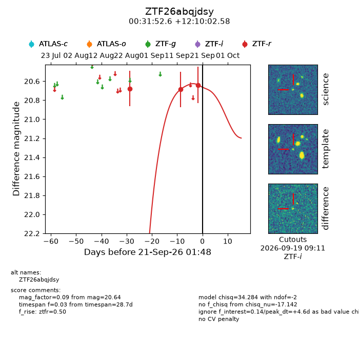
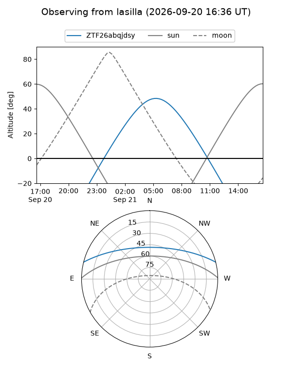
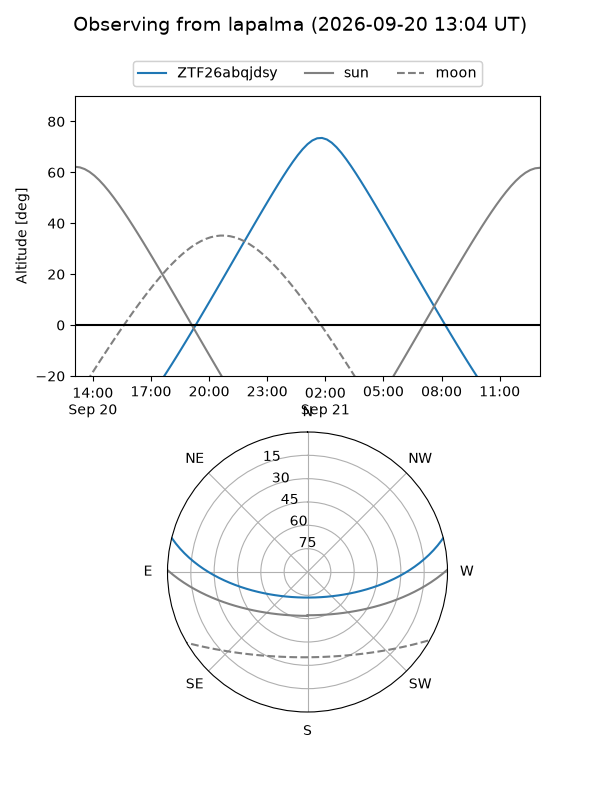
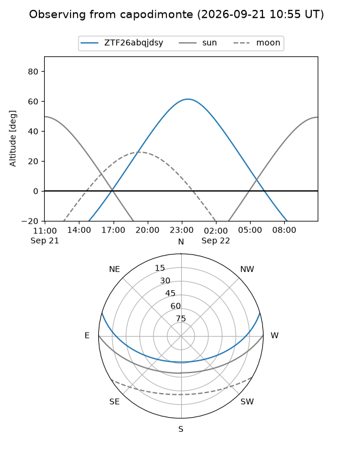
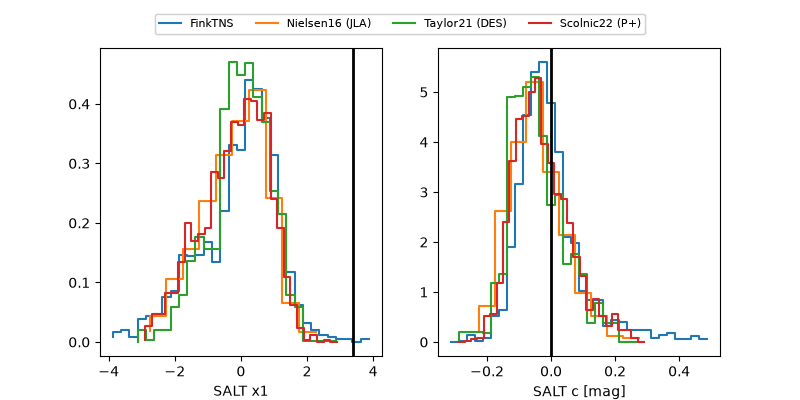

ZTF26abqjdsy
Target ZTF26abqjdsy at 2026-09-21 13:50
Aliases and brokers:
FINK-ZTF: ztf.fink-portal.org/ZTF26abqjdsy
Lasair-ZTF: lasair-ztf.lsst.ac.uk/objects/ZTF26abqjdsy
ALeRCE-ZTF: alerce.online/object/ZTF26abqjdsy
Direct TNS query: direct search
alt names
ZTF26abqjdsy (ztf,fink_ztf)
Coordinates:
equatorial (ra, dec) = 7.9693,+12.16738
equatorial (HMS+DMS) = 00:31:52.63,+12:10:02.58
galactic (l, b) = (115.4171,-50.41873)
Flags:
peak dt: +5.1
Photometry:
last ztfr=20.64
3 ztfr detections
Lightcurve

Visibility



Additional plots
